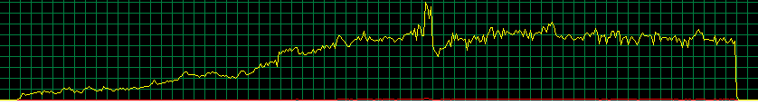
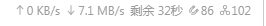
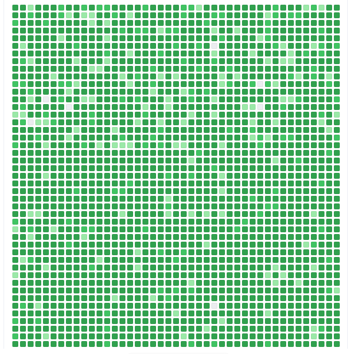

P2P 有点东西啊
我好像把博客当做日记写了……
有一段时间突然了解到了 P2P，然后我就放弃了迅雷。
那篇科普文说 P2P 是充满了分享的，但可能是我下载的东西没什么人分享，所以下载速度都挺一般。
有一天突发奇想，想搞个「Linux」系统玩玩，但是因为自己太菜，于是就用虚拟机。
虚拟机分配的是 4 G 内存，60 G 空间，网络选桥接，处理器选 4。
经过一番选择后选的是「Lubuntu」（乱选请别在意），到官网点击最新版发现下载不了。
后来经过一段时间的摸索，找了各种资料，用了阿里云镜像，但都用不来。
最后，发现是域名对不上，修改了域名之后，我成功在官网上找到了下载链接。
有许多下载方式，我注意到了 .iso 文件和 .torrent 文件。
一开始，我直接下载 .iso 文件，速度 1 ~ 3 M/s（没下多久，所以不太准确）。
后来突发奇想，下载了 .torrent 文件，几秒后下载完了，我又用 .torrent 文件下载系统文件，一开始速度不快，后来慢慢地到了 2 M/s，我寻思这已经不算慢了，结果后来速度突然上涨，涨到 7 ~ 8 M/s：

提供帮助的人也很多：

很快就下载完了：

谢谢广大网友的援助。
P2P 有点东西啊！